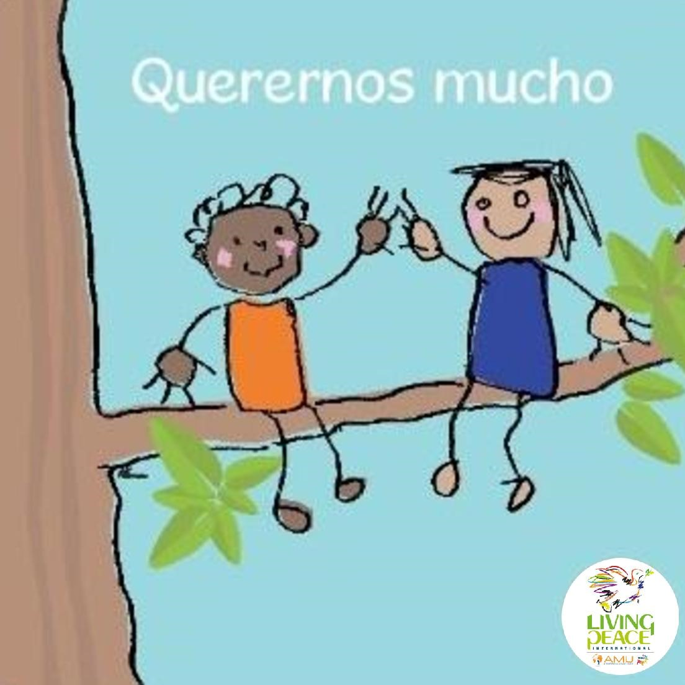

TU GESTO DE AMISTAD
Querernos mucho
Vive esta cara como una acción concreta de paz.
INFANCIA · PARA LA PAZ
Lanza el dado y descubre una forma sencilla de querer, compartir, consolar, hablar bonito y ayudar.

Vive esta cara como una acción concreta de paz.
LAS SEIS CARAS
Pulsa una tarjeta para descubrir cómo sembrar paz jugando y compartiendo.
“La paz en la infancia crece con palabras bonitas, manos que ayudan y corazones que comparten.”
Amistad · Ternura · Ayuda